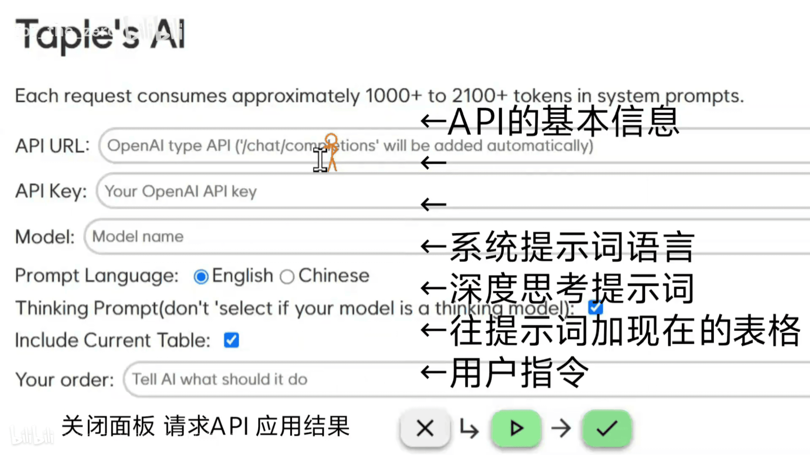
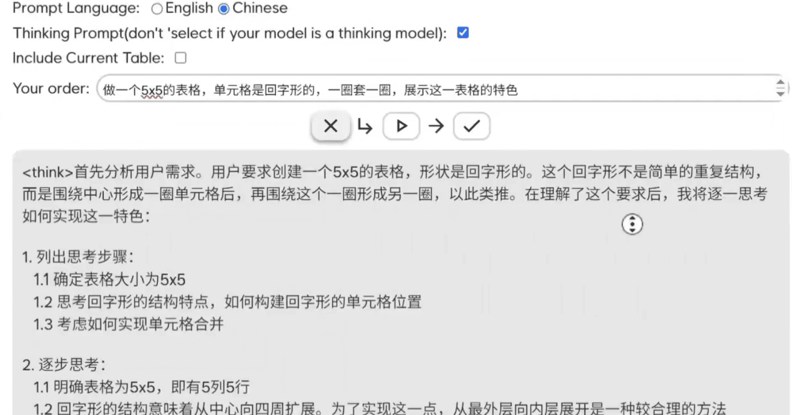

Taple's AI
Taple在前面已经介绍过了
这次是更新：AI调用支持
简单介绍
点击工具栏最左边的菜单栏，可以看到最下面多了个Open AI Panel点进去就能打开面板了
不是OpenA，I但是只兼容OpenAI格式的API
两个流畅的动画叠在一起，看起来很舒适~
首先是面板，视频里面的画面已经介绍得很好了

生成的过程长这样（视频截图）

试了一下，发现Qwen小参数模型都不太理想，最后换成Gemini 2.0 Flash就很爽了
心得
这次，是时隔好像是两个月，花了两个星期屎上雕花出来的，其实开发过程还顺手解决了一些问题，比如画布相关乘以1.5改成了dpr，这下清晰了
构建界面
老是忘这忘那的，先写了个URLKeyLanguageThinking，发现没有Model，然后又想到构思的时候还有一个修改的功能，加了个Include，又想了一下，最后加上了Order
一开始下面三个按钮都是一个样式的，没有按钮旁边的图标，但是我觉得这样辨识度和引导不够就加上了，按钮不带文字是懒得写
提示词
放在ai.js开头了，一共四个，中文不思考、英文不思考、中文思考、英文思考，都使用了XML+Markdown的风格编写的
找了个tokenizer，需求的token从1000+到2100+（中文思考）不等
提示词是我在Google AI Studio用Gemini 2.0 Flash-Lite测的
到了中文思考，我拼命提示Gemini 2.0 Flash-Lite不要用代码块，它总会在最后面加上一个xml代码块，同时很多模型都还会整不同的活
（转义需要，自己把反斜杠忽略掉吧）
...
\`<result>\`
{...}
\`</result>\`
...
<result>
\`\`\`json
{...}
\`\`\`
</result>
...
</think>
(没了，没有result了)
\`\`\`json
{...}
\`\`\`
(<result>都不输出了)
气死我了
我只对部分情况做了防备（在应用的时候）